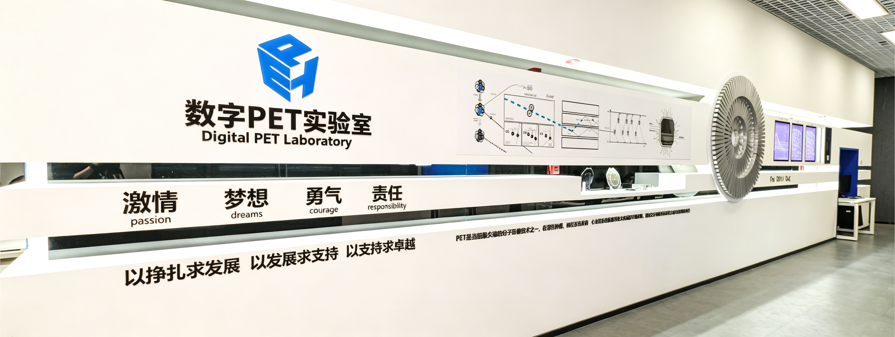

Donate
Support Scientifical Research
Our team focuses on all-digital PET scientific instruments and medical devices, with research spanning the entire innovation chain from key materials and core components to innovative systems and cutting-edge applications. Starting from the invention of the MVT method, we have spent over twenty years progressively realizing the innovation cycle of digital PET from sampling principles to clinical applications.
Exploring the "origins of life, consciousness, and the cosmos" represents our ultimate vision. We believe such efforts may exert an immeasurable and irreplaceable impact on the development of human civilization. What could be more fascinating and fulfilling than this?
Why Contribute?
- If you are curious about the world, you can join us in mapping metabolic processes at the molecular level, glimpsing the transition from neural networks to subjective experience, and deciphering the mysteries of cosmic event distribution. Your donation encourages the pursuit of scientific truth and inspires humanity's journey of curiosity.
- If you are compassionate toward humanity, you can join us in uncovering the intrinsic mechanisms of diseases like cancer, brain disorders, and rare diseases, pioneering new paradigms for diagnosis, treatment, and drug development. You'll help provide doctors with more tools for early diagnosis and precise treatment of major health threats like tumors, cardiovascular diseases, and neurological disorders, and equip biologists with sharper instruments for pathological research and new drug development. Your donation supports the transition of major diseases from "early detection" to "ultra-early quantification and treatment," offering hope for a leap in average human lifespan.
- If you believe in empowering future innovators, you can join us in gathering passionate young people with integrity and courage, cultivating research talents and industry elites in fields like biomedical engineering, electronics, automation, computer science, nuclear medicine, and clinical medicine. Your donation will help create more opportunities for promising students, enable aspiring young researchers to achieve their ambitions, and contribute to human health and the pursuit of scientific truth.
Life is fleeting. Why not join us in creating something that endures?